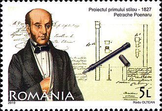

Date personale
Petrache Poenaru (n. 10 ianuarie 1799, Benești, județul Vâlcea - d. 2 octombrie 1875, București) a fost un pedagog, inventator, inginer și matematician român, membru titular al Academiei Române.
Copilăria
Petrache Poenaru pleacă la rugămințile lui Tudor Vladimirescu să studieze la Viena, iar apoi la Paris, unde studiază filologia și științele tehnice.
Pasiuni
În timpul studiilor brevetează primul toc rezervor din lume, mai întâi la Viena, apoi la Paris (brevet 3208, din 25 mai 1827), cu titlul Condeiul portăreț fără sfârșit, alimentându-se însuși cu cerneală (plume portable sans fin, qui s'alimente elle-même avec de l'encre). Invenția nu a fost, însă, produsă în serie, de aceea, titlul de inventator al stiloului este atribuit lui Lewis Edson Waterman.

Postage stamp commemorating Poenaru's invention
Familia
A fost unul dintre organizatorii învățământului național românesc, fondatorul Colegiului Național Carol I din Craiova. În tinerețe a fost secretarul personal al lui Tudor Vladimirescu iar ulterior, revenind în țară după călătorii și studii tehnice, s-a implicat în domenii legate de învățământ, administrație și inovație.